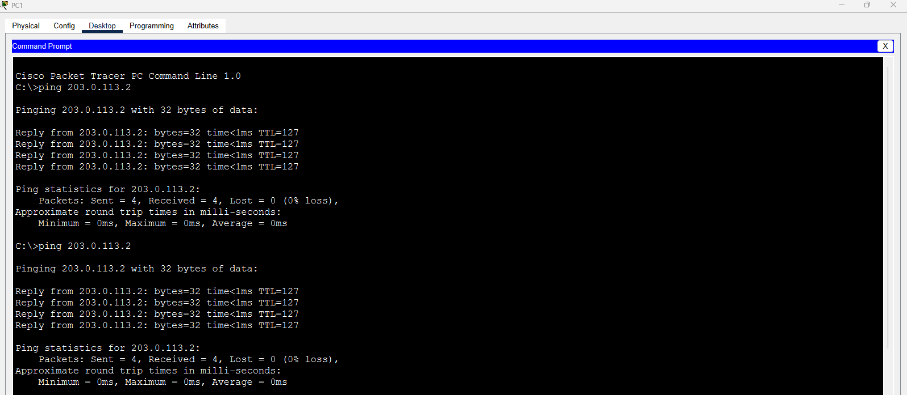

This lab demonstrates the configuration and operation of Dynamic Network Address Translation (NAT), which maps private IP addresses to a pool of public IP addresses dynamically as needed. Building on the Static NAT Lab, this setup uses the same topology (two internal PCs behind Router R1, connected to an external server) but implements a pool-based translation for outbound traffic.
What is Dynamic NAT? Dynamic NAT assigns public IPs from a configured pool to private IPs on a first-come, first-served basis, with mappings that expire after inactivity. This lab configures Router R1 with a NAT pool to allow PC0 and PC1 to access Server1 using dynamic translations.
The lab configures Router R1 to perform Dynamic NAT, using a pool of two public IPs (203.0.113.10 - 203.0.113.11) for the inside network (192.168.1.0/24), demonstrating flexible address allocation compared to static mappings.
interface Fa0
ip address 192.168.1.10 255.255.255.0
default-gateway 192.168.1.1
exit
interface Fa0
ip address 192.168.1.11 255.255.255.0
default-gateway 192.168.1.1
exit
interface range F0/1 - 2
switchport mode access
no shutdown
exit
interface G0/1
switchport mode access
no shutdown
exit
interface G0/1
ip address 192.168.1.1 255.255.255.0
no shutdown
exit
interface G0/0
ip address 203.0.113.1 255.255.255.0
no shutdown
exit
access-list 1 permit 192.168.1.0 0.0.0.255
ip nat pool NAT_POOL 203.0.113.10 203.0.113.11 netmask 255.255.255.0
ip nat inside source list 1 pool NAT_POOL
interface G0/1
ip nat inside
exit
interface G0/0
ip nat outside
exit
interface Fa0
ip address 203.0.113.2 255.255.255.0
default-gateway 203.0.113.1
exit
Verify the NAT configuration on Router R1 using show ip nat translations to confirm dynamic mappings (e.g., 192.168.1.10 to a pool IP like 203.0.113.10). Check NAT statistics with show ip nat statistics to review pool usage and translation activity.
A successful ping from PC1 to Server1 (203.0.113.2) verifies outbound connectivity, with NAT dynamically assigning a pool IP (e.g., 203.0.113.10). A ping from Server1 to PC0 will fail unless a port is forwarded, as Dynamic NAT does not support inbound initiation by default. Repeat for PC1, noting potential pool exhaustion if both PCs are active simultaneously.
